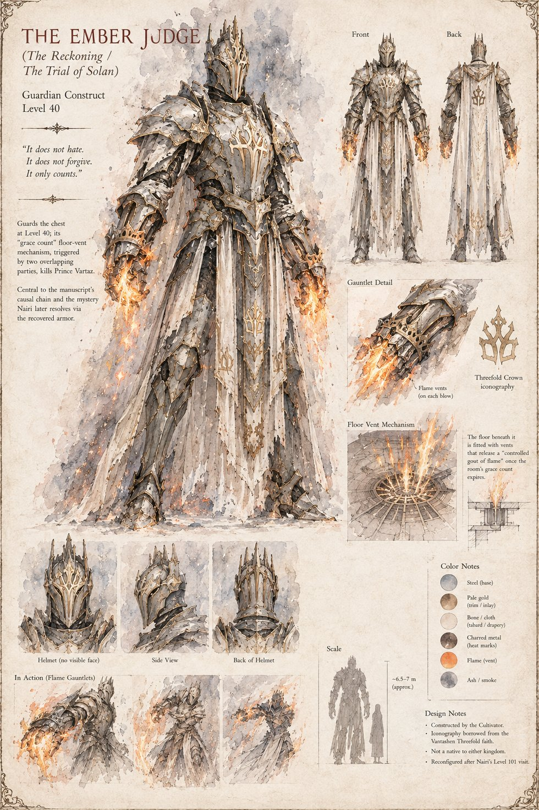

The Ember Judge
Guardian Construct · Level 40 · also called the Reckoning or the Trial of Solan
Armored head to foot in plate carved with the interlocking crowns of the Threefold faith, and armed with gauntlets that vent a controlled gout of flame on every blow. Guards the chest at Level 40 with a mechanism the delvers call the grace count: a guardian's defeat starts a brief, generous window to clear the room before the floor's own vents fire, built to empty a chamber of six fighters and never once built to recognize two rival parties colliding in the same doorway. It's exactly that mechanism, doing exactly what it was built to do, that kills Vartaz — not a blade, not a rival, not any crime with a face attached to it. Reconfigured into something else entirely after Nairi's unauthorized visit to Level 101.
“It does not hate. It does not forgive. It only counts.”
Appears in The Stolen Prince War